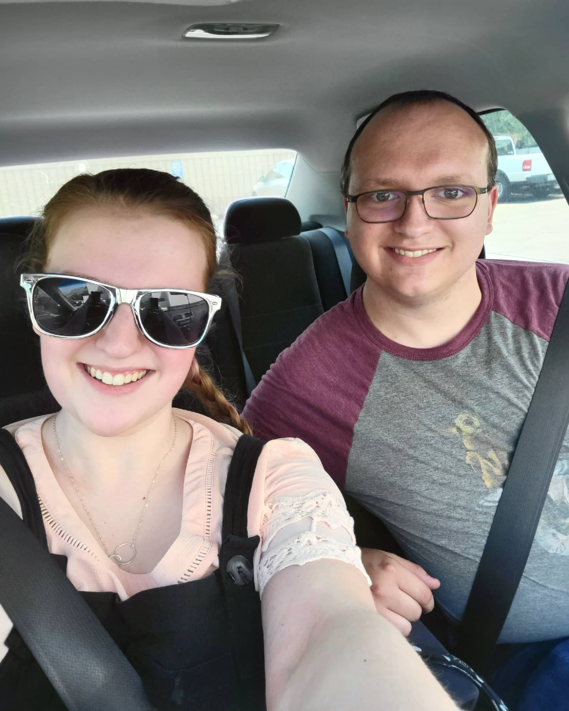

This photo is from my first and only canoeing trip. It was five days floating on the Green River with good people, all our supplies, no phone service, and a lot of swimming. It wasn't that long ago, but it is already one of my favorite memories.
The only celebration I wanted for my graduation was going out to eat with my family. My sister and I took a picture on our way out of the restaurant.
I got this picture when I was hiking the Y in Provo, Utah. On our way down, we got this gorgeous view.